P2
Outline
-
Skinning
- Linear Blend Skinning (LBS)
- Dual Quaternion Skinning (DQS)
- Blendshapes
-
Examples:
- The SMPL model
- Facial Animation
🔎 SIGGRAPH 经典的蒙皮课程。
Many images are from: https://skinning.org/
Alec Jacobson, Zhigang Deng, Ladislav Kavan, and J. P. Lewis. 2014.
Skinning: real-time shape deformation.
In ACM SIGGRAPH 2014 Courses (SIGGRAPH '14)
P7
Skinning Deformation
绑定与蒙皮概念
✅ Rigging：创建脸部控制器或身体骨骼。黄色为在 Mesh 顶点内放置的骨骼。
✅ Sinning：让控制器带动皮肤运动。或让 Mesh 顶点跟着骨骼运动。
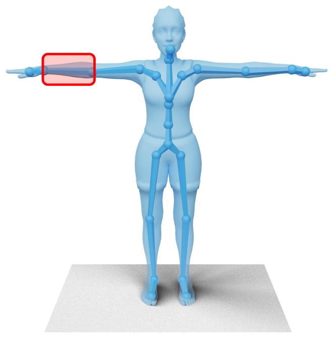
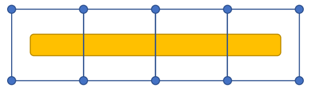
P12
Skinning Deformation
计算方式一
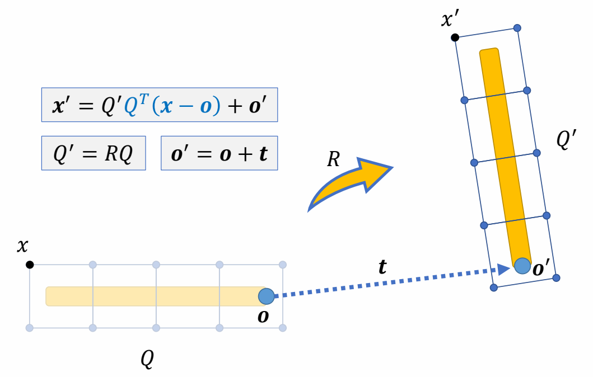
✅ 骨骼运动的旋转和平移分别为 \(R\) 和 \(t\)，关节的位置和朝向则变成了 \({Q}'\) 和 \({o}'\).
✅ 求 \(x\) 的新位置 \({x}'\). 本质上就是坐标系变换：世界坐标系 → \({o}\) 坐标系 → \({o}'\) 坐标系 → 世界坐标系
P13
计算方式二
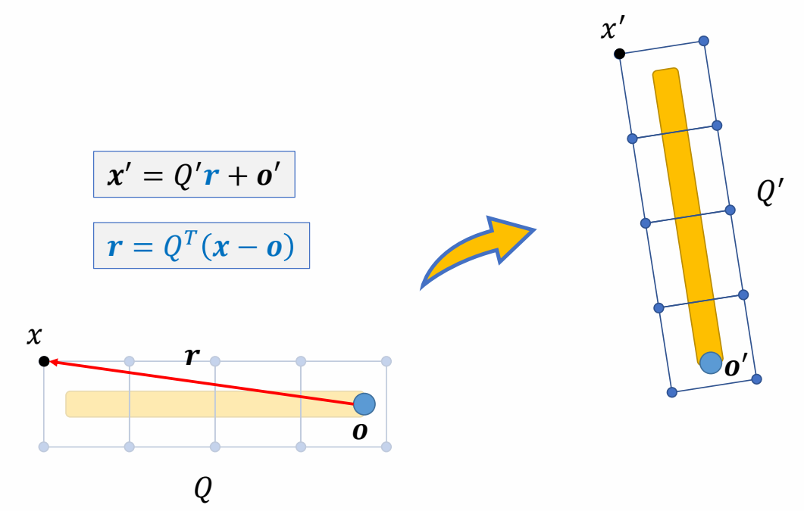
✅ \(r\) 为 \(x\) 在骨骼坐标的表达，用 \(r\) 计算更简洁。
P16
Bind Pose
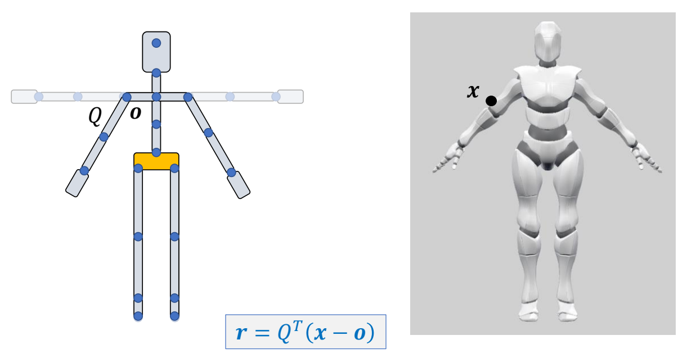
✅ 当骨骼参考姿态与 Mesh 参考姿态不一致时，需要先旋转骨骼到 Mesh 姿态。
P20
Skinning Deformation - 2 joints
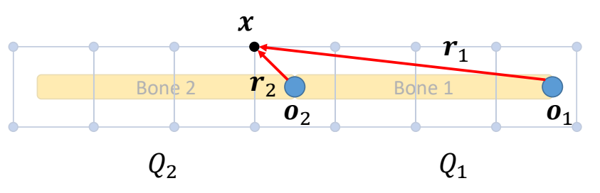
$$ r_2=Q^T_2(x-o_2) \quad \quad r_1=Q^T_1(x-o_1) $$
✅ 多骨骼场景，\(x\) 在关节 \(O_1\) 和 \(O_2\) 下分别 \(r_1\) 和 \(r_2\) 两种表达。
P23
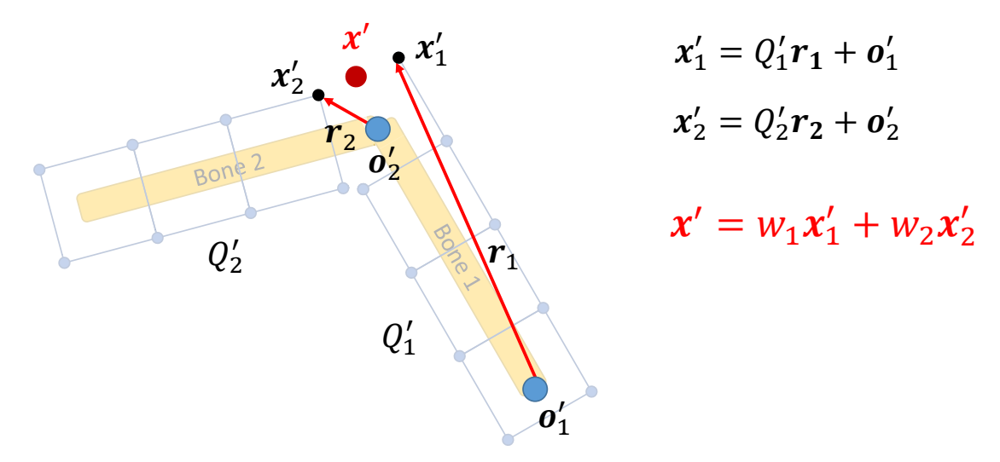
✅ 得到的旋转后表达分别为 \({x}'_1\) 和 \({x}'_2\)，通过权重对它们结合。
P29
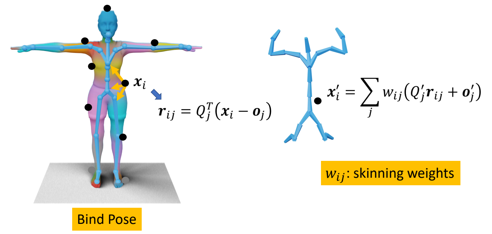
✅ 同时考虑所有 Mesh 顶点和所有关节。
P31
Linear Blend Skinning (LBS)
$$ {x}'_ i= \sum_ {j=1} ^ {m} w _ {ij}({Q}'_ jr_{ij}+{o}'_j) $$
- Used widely in industry
- Efficient and GPU-friendly
- Games like it
✅ Bind Pose：让骨骼与 Mesh 对齐，为 Bind Pose．
✅ Bind Pose 情况下 Motion 不一定为零。
P33
Automatic Skinning?
| 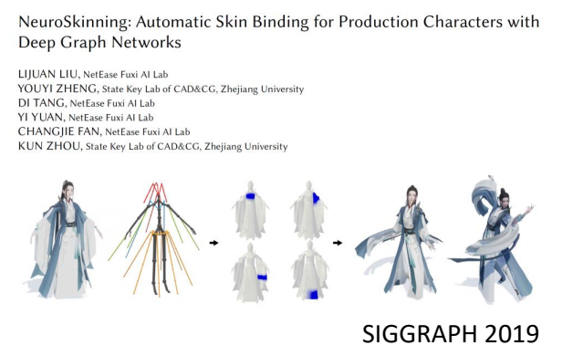 |
| 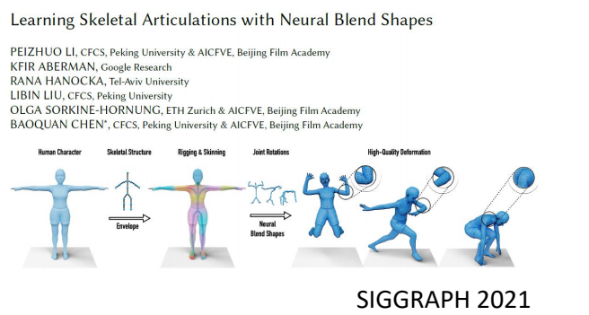 |
Pinocchio [Baran et al., 2007]
P37
Linear Blend Skinning (LBS)
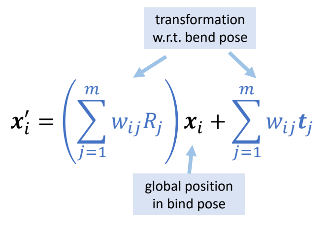
✅ 公式第一项对 \(R_j\) 所加权，所得到的很有可能不再是旋转矩阵。
存在的问题： Candy-Wrapper Artifact
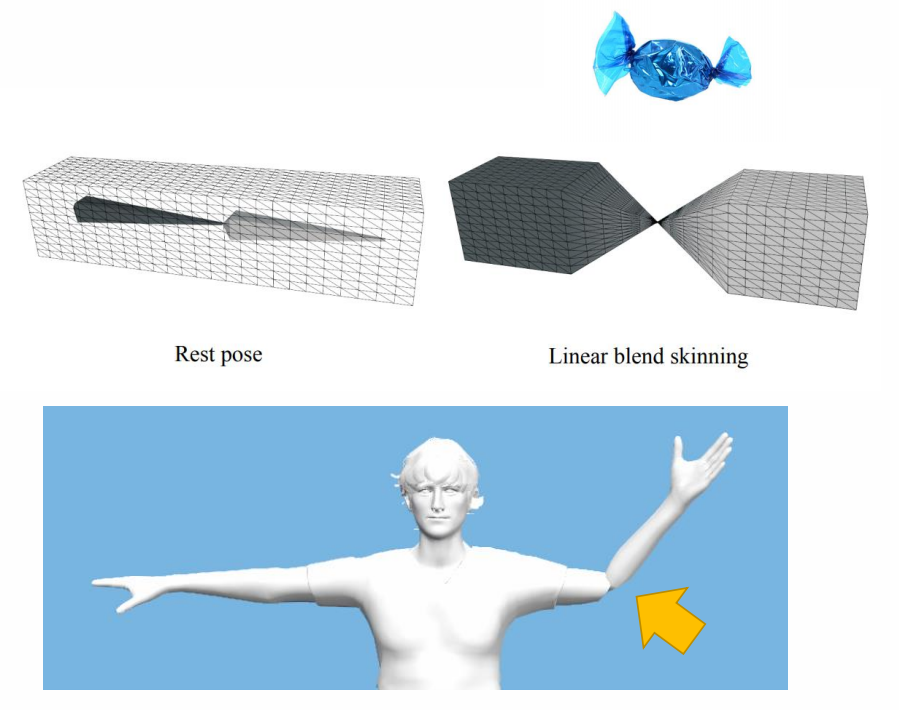
P40
Advanced Skinning Methods
-
Multi-linear Skinning (we will not cover this)
- Multi-weight enveloping [Wang and Phillips 2002]
- Animation Space [Merry et al. 2006]
- ……
-
Nonlinear Skinning
- Dual-quaternion Skinning (DQS)
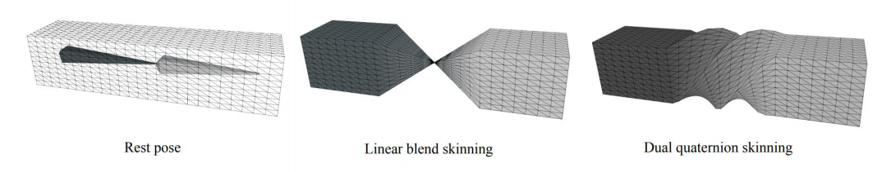
✅ DQ：对偶四元数。
P41
Non-linear Skinning
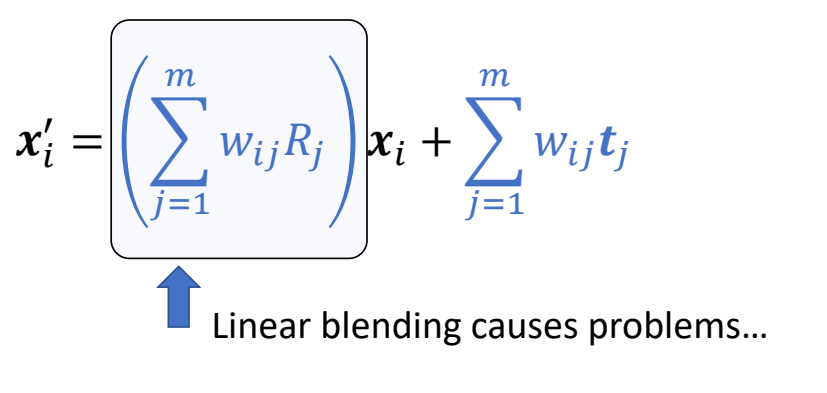
quaternions and SLERP
Can we use quaternions and SLERP?
P42
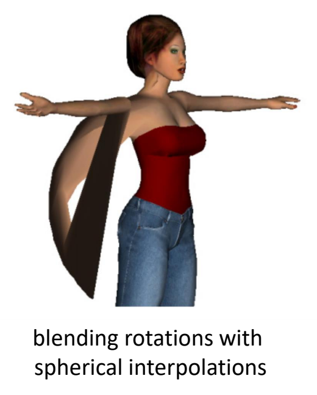
✅ 不行。原因：第一项与第二项必须要配合好，否则会乱掉。
P43
从公式角度来解释不行的原因
$$ {x}' _ i = ( \sum _ {j=1}^{m} w _ {ij} R _ j) x _ i+ \sum _ {j=1}^{m}w _ {ij}t_ j $$
$$ R \in SO(3) $$
$$ T_j=\begin{bmatrix} R_j & t_j\\ 0 &1 \end{bmatrix} \in SE(3) $$
✅ \(T_j\) 构成一个刚性变换群。
P46
Interpolation in 𝑆𝑂(3)
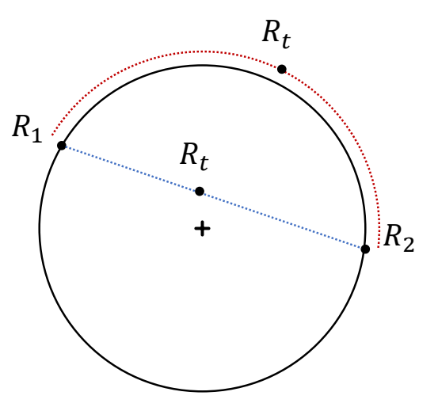
✅ 线性插值和 SLERP 插值 SO(3) 上。
P49
Interpolation in 𝑆𝐸(3)
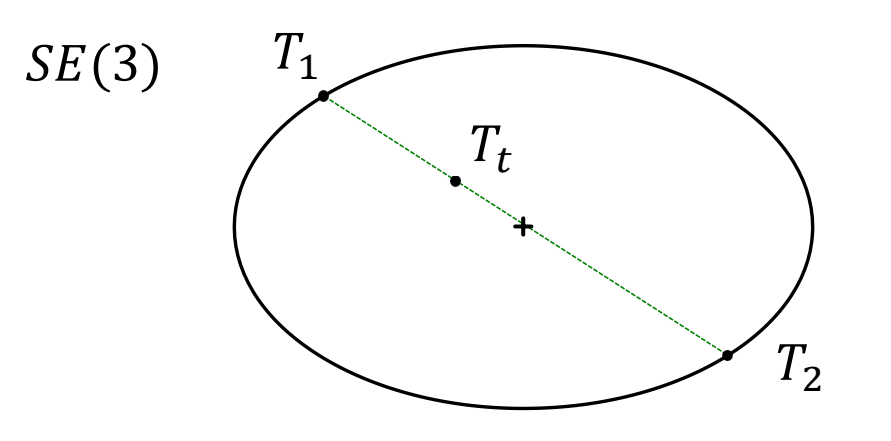
✅ SE（3）上的线性插值，插值到一个退化的点。
P51
Intrinsic Blending
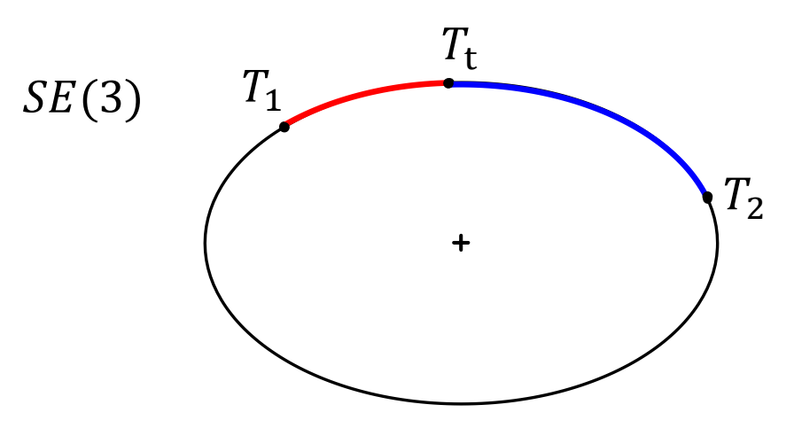
P52
Dual-Quaternion Skinning (DQS)
- Approximation of intrinsic averages in SE(3)
Ladislav Kavan, Steven Collins, Jiri Zara, Carol O‘Sullivan. Geometric Skinning with
Approximate Dual Quaternion Blending, ACM Transaction on Graphics, 27(4), 2008.
✅ 把旋转 ＋ 平移的刚性变换表达为对偶四元数。
P54
Dual Numbers
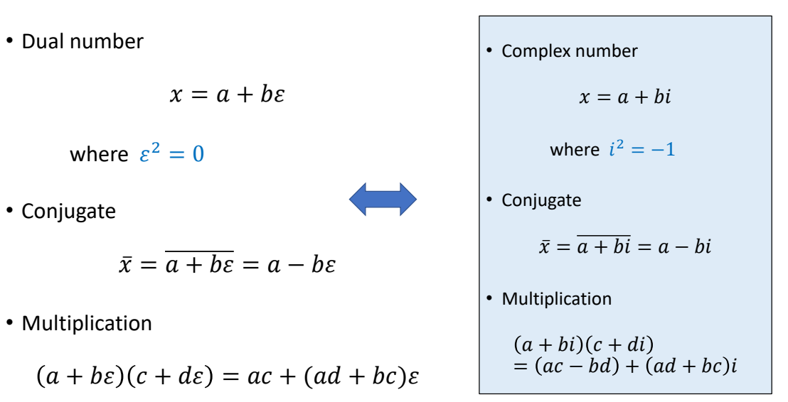
P55
Dual Quaternion
- Dual quaternion
$$ \hat{q} =q_0 + \varepsilon q_\varepsilon $$
$$ \text{where } \varepsilon^2=0 $$
A good note of dual-quaternion:
https://faculty.sites.iastate.edu/jia/files/inline-files/dual-quaternion.pdf
P56
Dual Quaternion
- Scalar Multiplication
$$ s\hat{q}=sq_r+sq_\varepsilon\varepsilon $$
- Addition
$$ \hat{q} _ 1 + \hat{q} _2=q _ {r1}+ q _ {r2} + \varepsilon (q _ {\varepsilon 1} + q _ {\varepsilon 2}) $$
- Multiplication
$$ \hat{q} _ 1 \hat{q} _ 2 = q _ {r1} q _ {r2} + \varepsilon (q _ {r1} q _ {\varepsilon 2} + q _ {r2} q _ {\varepsilon 1}) $$
P57
Dual Quaternion
- Dual quaternion
$$ \hat{q}=q_0+\varepsilon q_\varepsilon $$
- Conjugation
$$ \mathrm{I}:\hat{q}^* =q ^ * _ 0+\varepsilon q ^ * _ \varepsilon $$
$$ \mathrm{II}:\hat{q}^ {\circ} =q _ 0 - \varepsilon q _ \varepsilon $$
$$ \mathrm{III}: \hat{q} ^ \star = q ^ * _ 0 - \varepsilon q ^ *_ \varepsilon $$
$$ \quad \quad \quad \quad = ({\hat{q} ^ *}) ^ {\circ} = (\hat{q} ^ {\circ}) ^ * $$
$$ (\hat{q} _1\hat{q}_2)^\times =\hat{q} _1 ^\times \hat{q}_2^\times $$
- Norm
$$ ||\hat{q}||=\sqrt{\hat{q}^*\hat{q}} =||q_0||+\frac{\varepsilon (q_0\cdot q_\varepsilon) }{||q_0||} $$
P58
Dual Quaternion
- Unit dual quaternion: \(||\hat{q}||=1\), which requires:
$$ ||q_0||=1 $$
$$ q_0 \cdot q_\varepsilon=0 $$
P59
Dual Quaternion ⇔ Rigid Transformation
- Like quaternion, any rigid transformation \(T \in SE(3)\) can be converted into a unit dual quaternion
$$ Tx=Rx+t $$
$$ T=[R\mid t]\to \hat{q} =q_0+\varepsilon q_\varepsilon $$
$$ \begin{matrix} q_0=r \quad & \text{ quaternion of } R \quad \quad\quad\quad\\ q_\varepsilon =\frac{1}{2} tr & \text{ pure quaternion } t = (0,t) \end{matrix} $$
✅ 把一个刚性变换表示为对偶四元数。
P60
Dual Quaternion ⇔ Rigid Transformation
- Transform a vector \(v\) using unit dual quaternion
$$ {\hat{v} }' =\hat{q} \hat{v} \hat{q} ^\star $$
where
$$ \begin{align*} \hat{v} & = 1+\varepsilon (0,v) \\ & =(1,0,0,0)+\varepsilon (0,v_x,v_y,v_z) \end{align*} $$
$$ \quad $$
$$ \mathrm{III}: \hat{q} ^ \star = q ^ * _ 0 - \varepsilon q ^ *_ \varepsilon $$
$$ \quad \quad \quad \quad = ({\hat{q} ^ *}) ^ {\circ} = (\hat{q} ^ {\circ}) ^ * $$
P61
Dual Quaternion ⇔ Rigid Transformation
- Like quaternion, any rigid transformation \(T \in SE(3)\) can be converted into a unit dual quaternion
$$ T=[R\mid t]\to \hat{q} =q_0+\varepsilon q_\varepsilon $$
$$ \begin{matrix} q_0=r \quad \\ q_\varepsilon =\frac{1}{2} tr \end{matrix} $$
\(\hat{q}\) and \(-\hat{q}\) represent the same transformation \(\hat{Q}\) is a double cover of \(SE(3)\)
P62
Double Cover Visualized
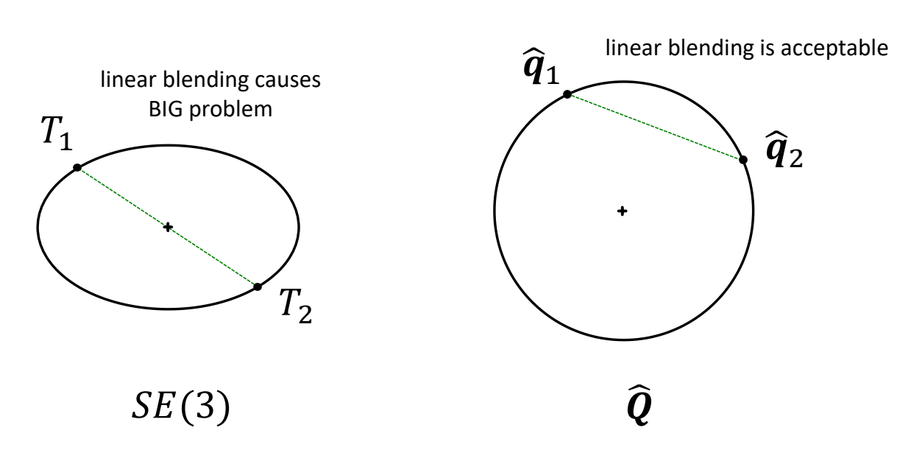
P63
Interpolating Dual-Quaternion
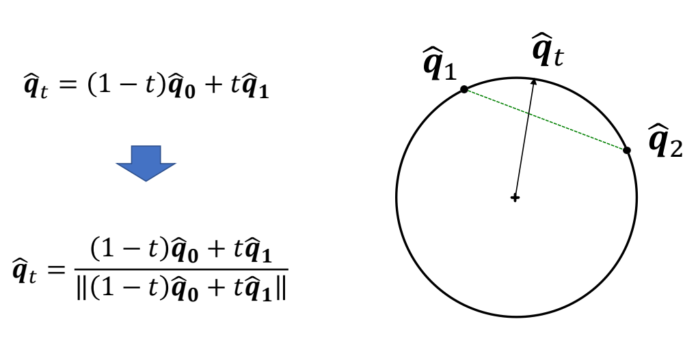
P64
Dual-Quaternion Linear Blending (DLB)
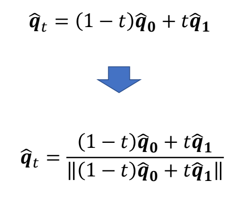
P65
Dual-Quaternion Skinning (DQS)
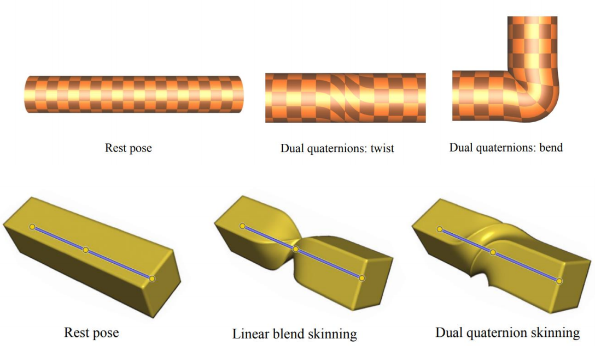
P66
Budging Artifact of DQS
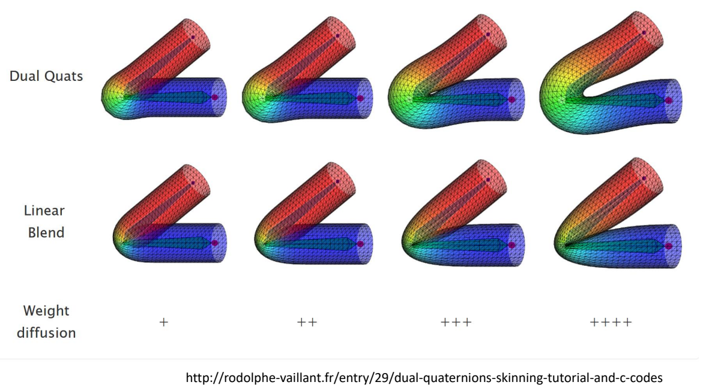
✅ 越往右蒙皮权重越光滑。
✅ DQBS 也有比较严重的 artifacts.
P67
How to Correct LBS?
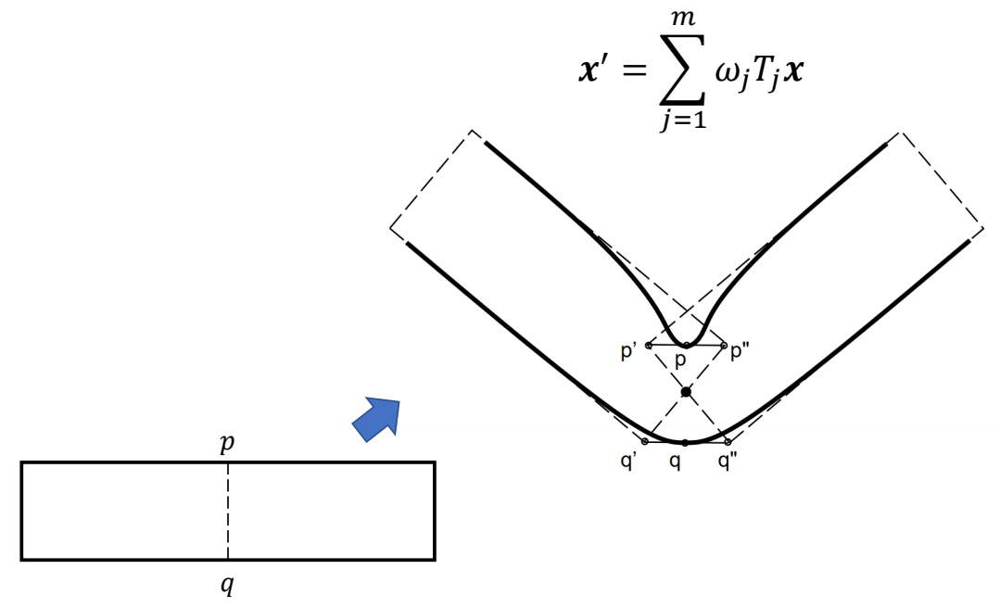
✅ LBS 的天然缺陷
P69
How to Correct LBS?
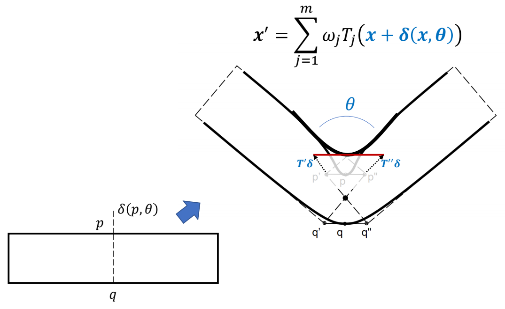
P74
Scattered Data Interpolation
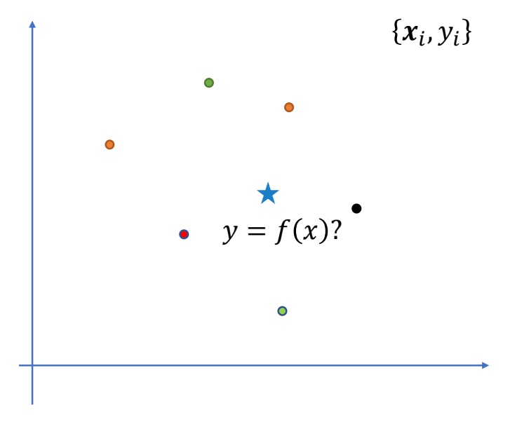
P76
Scattered Data Interpolation
- Linear
- Least squares
- Splines
- Inverse distance weighting
- Gaussian process
- Radial Basis Function
- ……
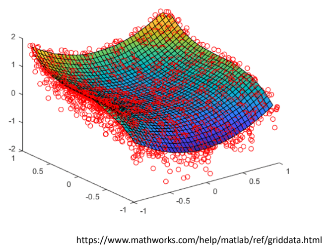
P81
Radial Basis Function (RBF) Interpolation
$$ y=\sum_{i=1}^{k} w_i\varphi (||x-x_i||) $$
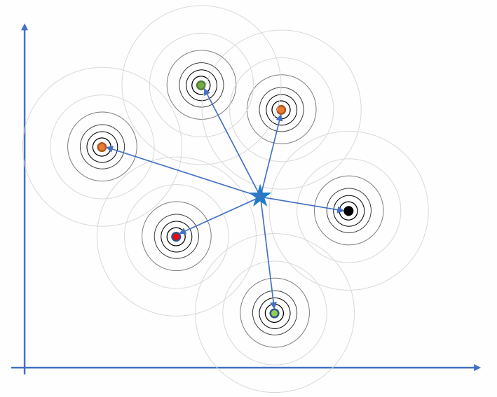
P83
Radial Basis Function (RBF) Interpolation
$$ y=\sum_{i=1}^{k} w_i\varphi (||x-x_i||) $$
How to compute \(w_i\) ? We need \(f(x_i)=y_i\)
$$
\begin{bmatrix}
R_{1,1} & R_{1,2} & \cdots & R_{1,K} \\
R_{2,1} & R_{2,2} & & \vdots \\
\vdots & & \ddots & \vdots \\
R_{K,1} & \cdots & \cdots & R_{K,K}
\end{bmatrix} \begin{bmatrix}
w_1\\
w_2 \\
\vdots\\
w_K
\end{bmatrix}=\begin{bmatrix}
y_1\\
y_2 \\
\vdots\\
y_K
\end{bmatrix}
$$
$$ R_{i,j}=\varphi (||x_i-x_j||) $$
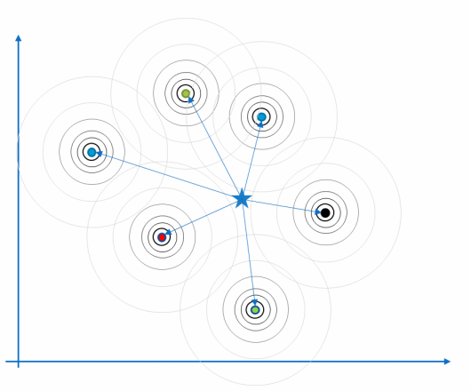
P84
Radial Basis Function (RBF)
$$ y=\sum_{i=1}^{k} w_i\varphi (||x-x_i||) $$
- Gaussian:
$$ \varphi (r)=e^{-(r/c)^2} $$
- Inverse multiquadric:
$$ \varphi (r)=\frac{1}{\sqrt{r^2+c^2} } $$
- Thin plate spline:
$$
\varphi (r)=r^2 \log r
$$
- Polyharmonic splines:
$$
\varphi (r)=\begin{cases}
r^k,k=2n+1\\
\\
r^k \log r,k=2n
\end{cases}
$$
P85
Pose Space Deformation
$$ {x}' =\sum_{j=1}^{m} w_iT_j (x+\delta (x,\theta )) $$
- \({x}'= SKIN(PSD(x))\)
- 𝑃𝑆𝐷 is implemented as RBF interpolation
- Example shapes can be created manually
- Or by 3D scanning real people → the SMPL model
J. P. Lewis, Matt Cordner, and Nickson Fong. 2000. Pose space deformation: a unified approach to shape
interpolation and skeleton-driven deformation. In Proceedings of the 27th annual conference on Computer
graphics and interactive techniques (SIGGRAPH ’00), ACM Press/Addison-Wesley Publishing Co., USA, 165–172.
P86
Pose Space Deformation
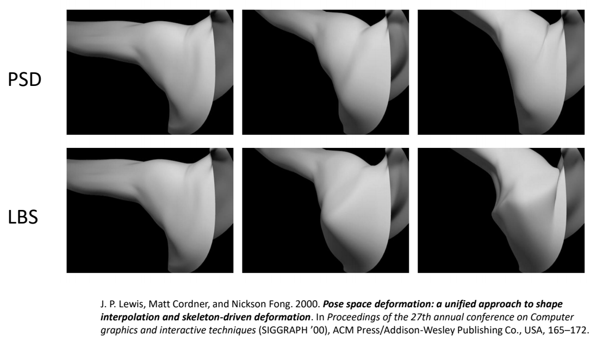
P87
Issues
- Per-shape or per-vertex interpolation
- Should we interpolate a shape as a whole?
- Local or global interpolation?
- Should a vertex be affected by all joints?
- Interpolation algorithm?
- Is RBF the only choice?
SIGGRAPH Course 2014 — Skinning: Real-time Shape Deformation
P88
Example-based Skinning (EBS) vs. Skeleton Subspace Deformation (SSD)
\(^\ast \)EBS: PSD
\(\quad\)
- Good: Easy to control
- Good: Good quality
- Good: Pose-dependent details (e.g. bulging muscle and extruding veins)
\(\quad\)
- Bad: Creating examples can be cumbersome
- Bad: Extra storage for examples
- Bad: Interpolation needs careful tuning
\(\quad\)
\(^\ast \)SSD: LBS, DQS, etc.
\(\quad\)
- Good: Easy to implement
- Good: Fast and GPU friendly
\(\quad\)
- Bad: Various artifacts
- Bad: Skinning weights needs careful tuning
- Bad: Hard to create pose-dependent details
P89
Example: SMPL Model
- A widely adopted human model in ML/CV
- Learned on real scan data
- Combines SSD and EBS techniques
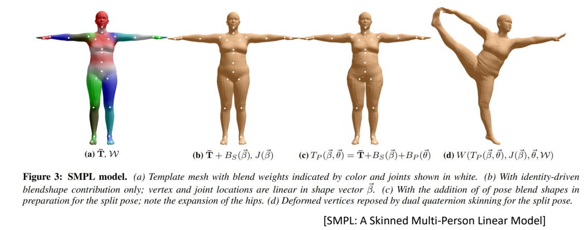
P92
Recall: Principal Component Analysis (PCA)
- Given a dataset {\(x_i\)}, \(x_i \in \mathbb{R} ^N\), then PCA gives
$$ x_i=\bar{x}+\sum_{k=1}^{n} w_{i,k}u_k $$
- \(u_k\) is the \(k\)-th principal component
- A direction in \( \mathbb{R} ^N\) along which the rojection of {\(x_i\)} has the \(k\)-th maximal variance
- \(w_{i,k}=(x_i-\bar{x})\cdot u_k\) is the score of \(x_i\) on \(u_k\)
P93
Recall: Principal Component Analysis (PCA)
• Given a dataset {\(x_i\)}, \(x_i \in \mathbb{R} ^N\), the PCA can be computed by apply eigen decomposition on the covariance matrix
$$ \sum =X^TX=U\begin{bmatrix} \sigma ^2_1 & & & \\ & \sigma ^2_2 & & \\ & & \ddots & \\ & & \sigma ^2_N \end{bmatrix}U^T $$
-
\(X=[x_0-\bar{x}, x_1-\bar{x},\dots ,x_N-\bar{x}]^T\)
-
\(\sigma _i\ge \sigma _j\ge 0\) when \(i< j\), corresponds to the Explained Variance
-
\(U=[u_1,u_2,\dots,u_N]\)
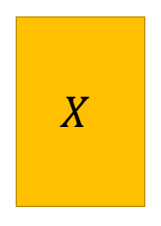
P94
PCA over Body Shapes
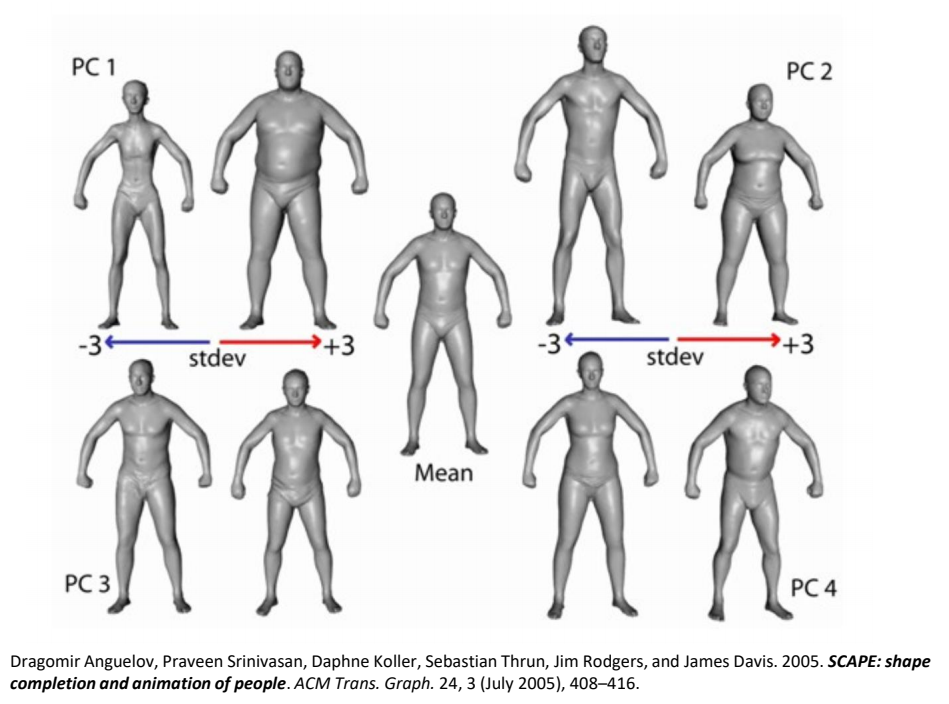
P95
SMPL Model: Body Shape
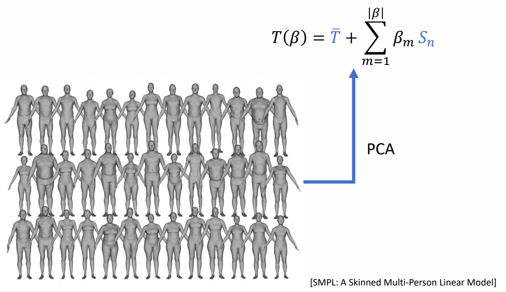
P96
SMPL Model: Pose Blend Shapes
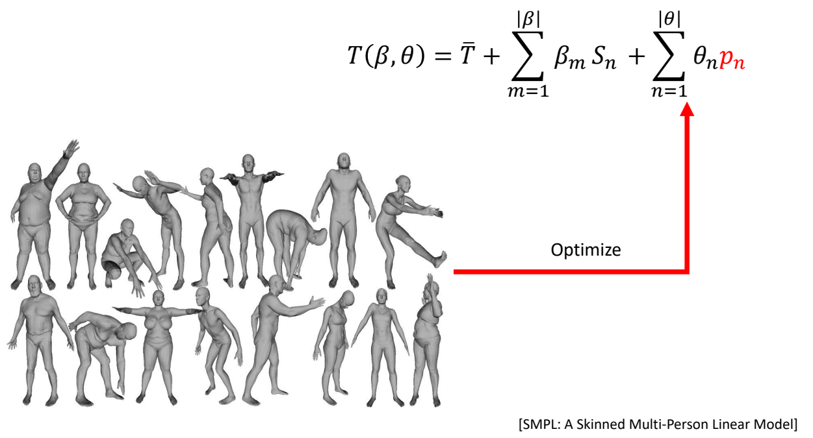
P97
SMPL Model: Deformation
$$ T(\beta ,\theta )=\bar{T} + \sum _ {m=1}^{|\beta |} \beta _ m S_ n + \sum _ {n=1}^{|\theta |}\theta _np_n $$
$$ x=SKIN(T(\beta ,\theta ),\theta ,w) $$
$$ SKIN:\text{LBS, DQS, etc}\dots $$
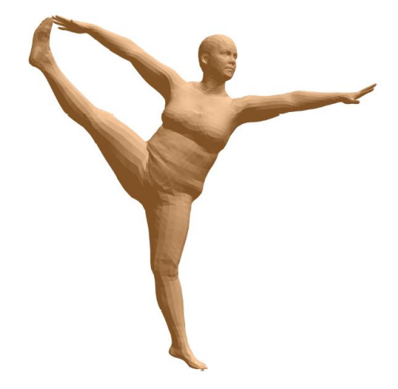
[SMPL: A Skinned Multi-Person Linear Model]
P99
Facial Animation
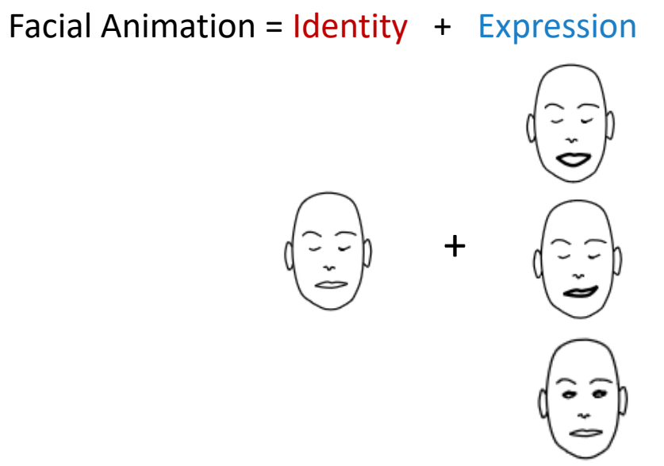
P101
Facial Animation
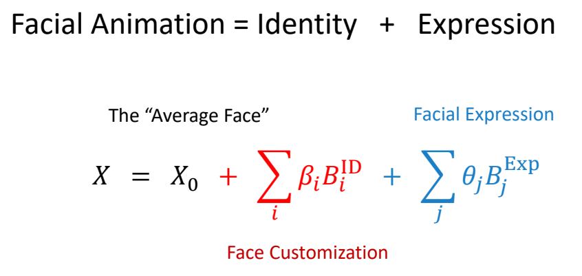
✅ \(B_j\) 与 ID 无关，能做出差不多的效果。
✅ 要更精细的效果，可以定义与 ID 相关的 \(B_j\).
P102
Facial Blendshapes
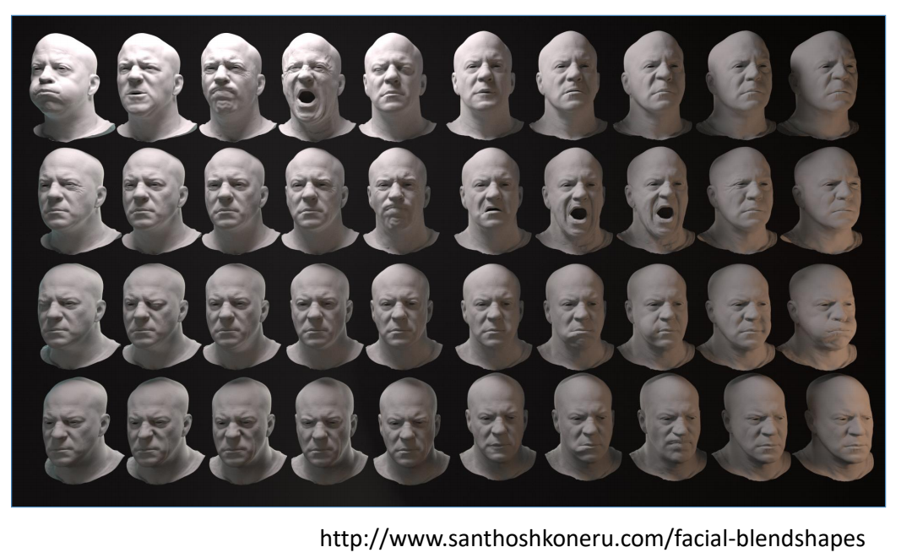
P103
A Typical Set of Blendshapes (ARKit)
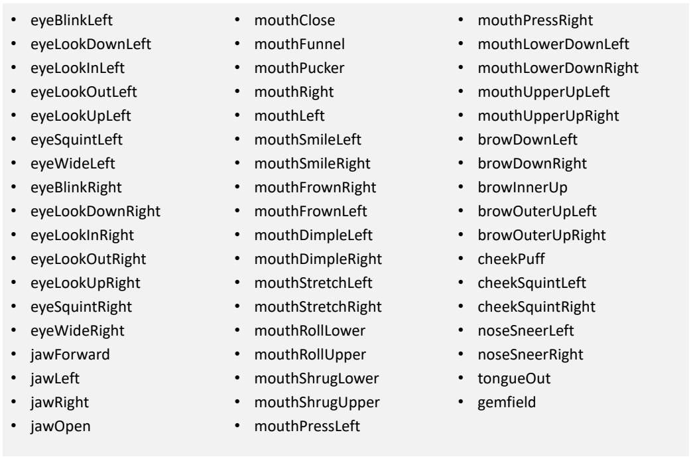
P104
Blendshapes vs. Example-based Skinning
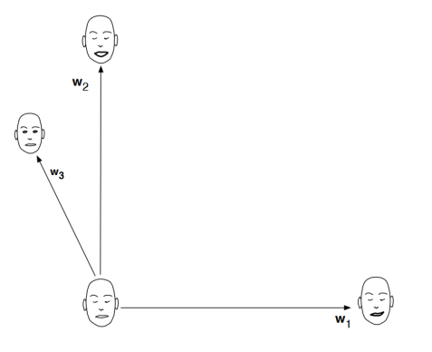
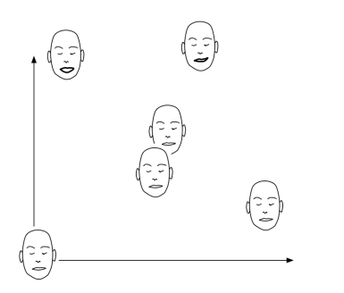
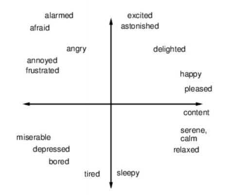
✅ 几种不同的表情基混合方式。
✅ 第二种，直接在几个脸之间做混合，适用于数据少的情况。
P105
Morphable Face Models
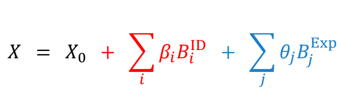
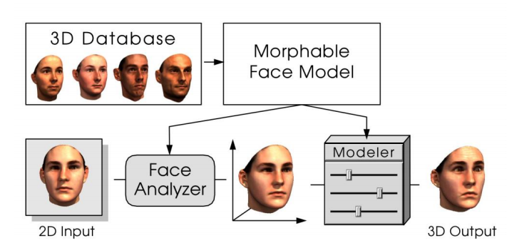
Egger et al. 2020. 3D Morphable Face Models - Past, Present, and Future. ACM Trans. Graph. 39, 5 (June 2020), 157:1-157:38.
✅ 第一项：平均脸。第二项：PCA. 第三项：表情基。
✅ \(B_i^{ID}\) 通常由 PCA 得到。
✅ 基于脸部肌肉的物理仿真。
P107
How to Animate a Face?
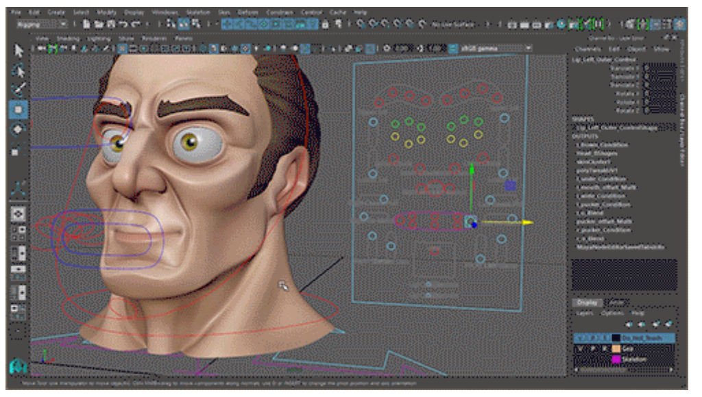
P110
Face Tracking
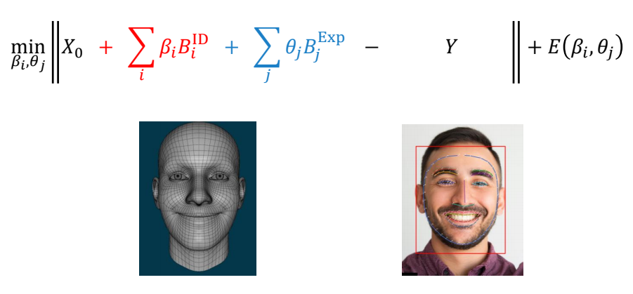
✅ 用一个视频人脸驱动 3D 人脸。
✅ 人脸 \(\overset{①}{\rightarrow} \) 特征点 \(\overset{②}{\rightarrow} \) 表情参数
✅ 1、提取 \(\quad\) 2、IK．
本文出自CaterpillarStudyGroup，转载请注明出处。
https://caterpillarstudygroup.github.io/GAMES105_mdbook/